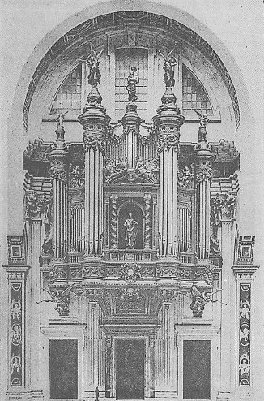

BASILIQUE DE SAINT-PIERRE DE ROME
(Photographie du projet de buffet d'orgue et de la tribune)

PROJET D'ORGUE MONUMENTAL
PAR A. CAVAILLÉ-COLL, FACTEUR D'ORGUES, A PARIS
COMPOSITION PAR A. SIMIL, ARCHITECTE
Projet d'orgue monumental pour la Basilique de Saint-Pierre de Rome.
Présentation de l'ouvrage.